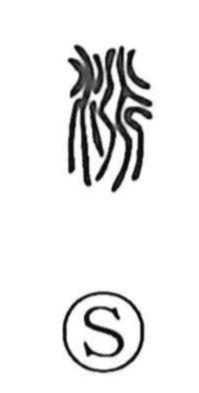

派

Uncategorized
Kun: wakareru, tsukawasu | On: ha
faction ・ sect ・ school ・ to branch off ・ to dispatch
Explanation
Shirakawa explains 派 as a phono-semantic character: the water radical indicates the domain of meaning, while 辰 serves as the phonetic and, in its earliest form, depicts water splitting into branches—the original image behind 派. With “water” added, the character names the act of flow dividing and spreading: to branch off and flow, to branch off, and by extension to send out or dispatch. He links it to related water graphs: 永 marks a place where currents converge with force, and 漾 (yō, ‘to drift, float’) evokes the abiding vigor carried downstream. From this image of a stream dividing from the main current arose the later sense of a faction or school.